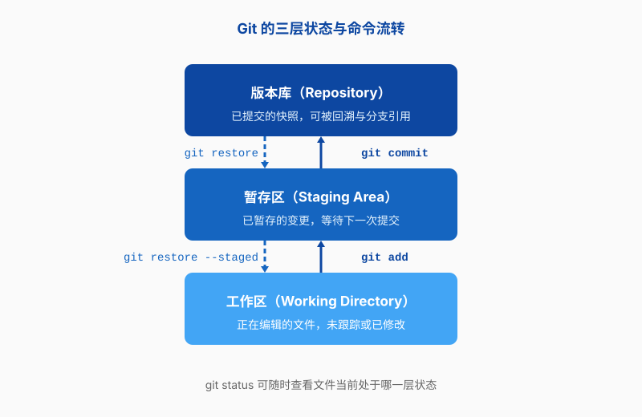
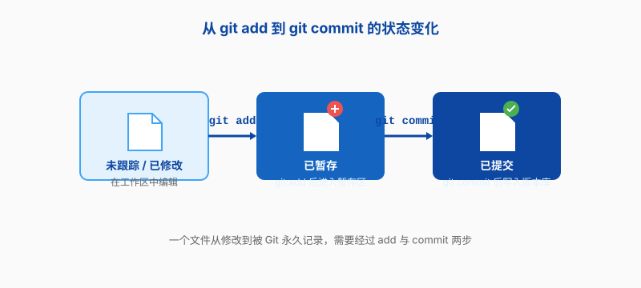
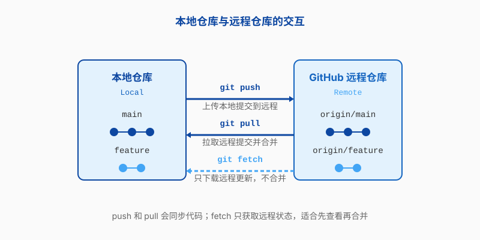
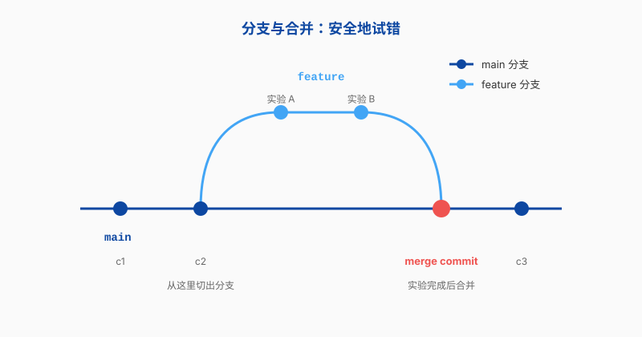
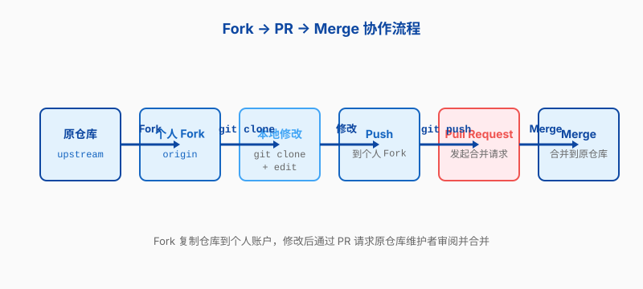

第五章 Git
第四章讲的工具让你操作 Linux 更顺手：提示符更聪明、找文件更快、训练不怕断线。但从这一章开始，我们要解决一个更根本的问题——怎么让代码、论文、实验记录这些会不断修改的东西，不随着时间变得一团糟。
做科研的人几乎都遇到过这样的场景：论文改到第七版，文件名已经从 paper.tex 变成 paper_v3_final_导师修改_真的最终版.tex；训练模型的脚本昨天还能跑，今天加了点新功能，上个月那个能复现结果的版本却找不到了；课题组三个人同时改一份代码，最后谁也不知道谁改了什么，只能靠微信群里的文件传输助手“合并”。
这些问题有一个共同的名字：版本控制。Git 就是目前最流行的版本控制工具。它不是只为程序员准备的——AI 训练脚本、LaTeX 论文、材料模拟输入文件、实验数据处理方法，所有会变化的东西都可以交给 Git 管理。学会了它，你就拥有了一台“时间机器”和一个“协作工作台”。
为什么科研离不开版本控制？
在讲 Git 怎么用之前，先说说为什么需要它。很多人第一次听说 Git，会以为这是软件工程师的专属工具——“我又不写大型软件，为什么要学这个？”但真正用过的人都知道，科研场景里对版本控制的需求，可能比商业软件开发还要迫切。
论文的“最终版”陷阱
写论文是最典型的例子。你打开 paper.tex，改了引言，保存。导师说结论要再强调一下，你又改了一遍，另存为 paper_v2.tex。审稿人回来提意见，你继续改，文件名变成 paper_v2_revised.tex。合作者又加了几段，于是出现 paper_v2_revised_小明.tex、paper_v2_revised_小明_合并版.tex。
再过两个月，你想找回某个被删掉的段落，却忘了它到底在哪个文件里。你只好把所有版本都打开，一个一个对比。更糟的是，你发现两个“最终版”的内容居然不一样——一个里有那条关键公式，另一个没有。哪个才是对的？
Git 解决的就是这个问题。它不会帮你生成五花八门的文件名，而是把每一次修改都记录成一个“快照”，并附上一句你写的说明。想看两个月前的版本？一条命令就能回到那个时间点。想比较两个版本的区别？Git 会逐行标出来。
实验与模型的可重复性
做 AI 训练的同学一定懂这种痛：你跑了一个实验，loss 曲线很漂亮，测试集准确率比 baseline 高了三个点。你兴奋地截了个图，准备写进论文。第二天想复现这个结果，却发现同样的脚本、同样的数据，跑出来的数字变了。
为什么？可能是你中间偷偷改了一个超参数，可能是数据集预处理脚本被覆盖，可能是随机种子没固定，也可能只是你记错了自己用的是哪个 checkpoint。没有记录，复现就成了猜谜游戏。
Git 让“可重复”有了抓手。每次重要实验之前，你都可以把当时的代码状态提交一次，写上“使用 ResNet-34、lr=0.001、batch=64 跑 ImageNet 子集”。几个月后，哪怕你的代码已经改得面目全非，仍然可以切回那个确切的版本，重新跑出一样的结果。
模型文件（.pth、.ckpt）通常很大，Git 本身不适合直接存它们——后面我们会讲怎么处理。但训练脚本、配置文件、数据预处理代码，这些都应该交给 Git。
协作时的混乱
科研很少是一个人单打独斗。一个课题组里，导师把握方向，师兄负责模型，你负责数据处理和实验，还有同学写论文。四个人同时动同一份代码，如果没有统一的协作方式，很快就会乱套。
最常见的“协作方式”是微信传文件：train_小明改.py、train_小红改.py、train_最终合并.py。每个人都在自己的副本上改，最后由一个人手动把改动复制粘贴到一起。这个“合并”过程既痛苦又容易出错——你很容易漏掉某个人的修改，或者把两个互相冲突的改动硬塞在一起。
Git 的协作逻辑完全不同。它不是让你各改各的副本，而是让每个人在同一棵“修改树”上工作。谁改了什么、什么时候改的、为什么改，全部有记录。两个人的修改如果冲突，Git 会明确标出来，让你决定怎么合并，而不是默默覆盖。
Git 是什么？
Git 诞生于 2005 年，作者是林纳斯·托瓦兹——没错，就是写 Linux 内核的那位。当时 Linux 内核开发用的是一个叫 BitKeeper 的商业版本控制工具，后来授权条款变了，Linux 社区没法继续免费用。林纳斯一不做二不休，花了几天时间写了一个新工具，这就是 Git。
Git 的设计目标很纯粹：管理 Linux 内核这种超大规模、多人协作、分支频繁的项目。所以它从诞生之初就特别快、特别可靠，也特别擅长处理分支和合并。后来它走出内核社区，成为几乎所有软件开发项目的标配，科研领域自然也不例外。
仓库：项目的快照档案馆
Git 管理项目的基本单位叫仓库（repository，常简写成 repo）。一个仓库就是一个被 Git 盯上的目录——它可以是你的毕业论文文件夹，也可以是一个 AI 训练项目文件夹。
仓库里有一个隐藏的 .git 目录，那是 Git 的“档案馆”。你提交过的每一次修改、每一个分支、每一条历史记录，都存放在那里。只要不删除 .git，你随时能回到过去任何一个状态。
仓库分两种：本地仓库存在你自己的机器上，远程仓库存在服务器上（比如 GitHub、GitLab、课题组自建的 Gitea）。本地仓库让你自己管理版本，远程仓库让你和别人共享。后面几节我们会分别讲怎么用。
提交：一次有留言的存档
Git 把每次保存称为一次提交（commit）。你可以把它理解为游戏里的存档点：你走到某个关键位置，存一下档，写一句备注“打完第一关 boss”，以后随时能读这个档。
但 Git 的提交比游戏存档更强大。每次提交都会记录：当时所有被跟踪文件的内容、提交的时间、提交者的名字，以及一段你自己写的说明文字。这些内容组合起来，构成一个唯一的哈希值——一长串看起来像乱码的字符，比如 a1b2c3d。这个哈希值就是这次提交的身份证号。
提交不是自动发生的，必须你主动执行 git commit。这意味着你可以自由决定什么时候存档、存什么、附上什么说明。写一句好的提交说明，等于给未来的自己留一张字条。
分支：平行宇宙
分支（branch）是 Git 最迷人的设计之一。它允许你在同一个仓库里同时存在多条平行的时间线：主分支上代码稳定运行，另一条分支上你在尝试一个新算法，还有一条分支上同学在修一个 bug。三条线互不干扰，各走各的。
等某个分支上的尝试成熟了，你可以把它合并（merge）回主分支。如果尝试失败了，直接删掉那条分支就行，主分支毫发无伤。这种“安全地试错”的能力，让 Git 特别适合科研——科研本来就是不断试错的。
一个做材料模拟的同学可能这样用分支：主分支放已经验证稳定的计算脚本，feature/new-potential 分支测试新的势函数，fix/lattice-constant 分支修晶格常数计算的小 bug。三个方向并行推进，不会互相踩脚。
工作区、暂存区与版本库
Git 管理文件时，把文件分成三个层次：工作区、暂存区、版本库。理解这三层，是学会 Git 的关键。
- 工作区（Working Directory）就是你看到的文件。你在编辑器里改
train.py，改的就是工作区里的文件。 - 暂存区（Staging Area，也叫 Index）是一个中间台。你改完文件后，用
git add告诉 Git“这些改动我准备提交了”，改动就被放到暂存区。 - 版本库（Repository）是
.git目录里保存的所有历史。你执行git commit后，暂存区的内容会被永久写入版本库，成为一次新的提交。
为什么要多一个暂存区？因为它让你可以精挑细选。比如你同时改了三个文件：一个修复了 bug，一个加了新功能，一个只是顺手调整了格式。你可以先 git add 修复 bug 的那个文件并提交，再 git add 新功能文件并提交。这样每次提交只做一件事，历史记录就特别清楚。
这个三层结构和它们之间的命令流转，见图 5.1。

第一个仓库
概念讲了一堆，现在动手建一个真正的仓库。我们会用一个 AI 训练项目做例子：里面有一篇 LaTeX 论文、几个 Python 脚本、一个配置文件，还有一些实验数据。
先确认 Git 已经安装。第二章和第三章讲过怎么装软件，Debian/Ubuntu 上直接：
student@debian:~$ sudo apt install git
...
student@debian:~$ git --version
git version 2.39.5
新建仓库还是克隆已有仓库
有两种方式得到一个 Git 仓库：在本地新建，或者从远程克隆。
如果你从零开始一个项目，用 git init：
student@debian:~$ mkdir ~/battery-ml
student@debian:~$ cd ~/battery-ml
student@debian:~/battery-ml$ git init
Initialized empty Git repository in /home/student/battery-ml/.git/
现在 ~/battery-ml 就是一个 Git 仓库了。目录里多了一个 .git，里面存着 Git 需要的所有元数据。
如果你想参与一个已经存在的项目，比如课题组在 GitHub 上共享的代码库，用 git clone：
student@debian:~$ git clone https://github.com/example-lab/battery-ml.git
Cloning into 'battery-ml'...
remote: Enumerating objects: 142, done.
remote: Total 142 (delta 0), reused 0 (delta 0)
Receiving objects: 100% (142/142), 28.45 KiB | 1.45 MiB/s, done.
Resolving deltas: 100% (56/56), done.
git clone 会把远程仓库的完整历史复制到本地，包括所有提交、分支和标签。克隆下来后，你就可以在本地随意查看和修改。
告诉 Git 你是谁
Git 需要知道每次提交是谁做的。第一次使用时，要配置你的名字和邮箱。这个配置可以针对整个用户（--global），也可以只针对当前仓库。
student@debian:~/battery-ml$ git config --global user.name "Li Hua"
student@debian:~/battery-ml$ git config --global user.email "lihua@example.edu.cn"
用真实信息，不要用网名。这些信息会写进提交记录，以后别人（包括导师和合作者）看到提交历史，能知道是谁做的修改。
想查看当前配置：
student@debian:~/battery-ml$ git config --list
user.name=Li Hua
user.email=lihua@example.edu.cn
init.defaultbranch=main
...
把文件交给 Git
新建仓库后，Git 并不会自动跟踪所有文件。你要主动告诉它“这个文件归我管”。流程分三步：修改文件、加入暂存区、提交到版本库。
假设项目里已经有一个训练脚本 train.py 和一个配置文件 config.yaml。先看一下 Git 的状态：
student@debian:~/battery-ml$ git status
On branch main
No commits yet
Untracked files:
(use "git add <file>..." to include in what will be committed)
config.yaml
train.py
nothing added to commit but untracked files present (use "git add" to track)
Git 说有两个“未跟踪文件”：config.yaml 和 train.py。它们就像还没被档案馆登记的资料，Git 知道它们存在，但还没纳入管理。
把它们加入暂存区：
student@debian:~/battery-ml$ git add train.py config.yaml
再跑 git status，你会看到这两个文件变成了“Changes to be committed”——等待被提交。
然后执行第一次提交：
student@debian:~/battery-ml$ git commit -m "初始提交：添加训练脚本和配置文件"
[main (root-commit) a1b2c3d] 初始提交：添加训练脚本和配置文件
2 files changed, 80 insertions(+)
create mode 100644 config.yaml
create mode 100644 train.py
-m 后面是提交说明。第一次提交通常叫“初始提交”或“initial commit”。提交成功后，这两个文件就正式进入版本库了。
现在修改一下 train.py，把学习率从 0.01 改成 0.001。再跑 git status：
student@debian:~/battery-ml$ git status
On branch main
Changes not staged for commit:
(use "git add <file>..." to update what will be committed)
modified: train.py
no changes added to commit (use "git add" and/or "git commit -a")
Git 发现 train.py 被修改了，但还没进入暂存区。要再次 git add train.py，然后 git commit：
student@debian:~/battery-ml$ git add train.py
student@debian:~/battery-ml$ git commit -m "降低学习率至 0.001，提升训练稳定性"
[main e4f5g6h] 降低学习率至 0.001，提升训练稳定性
1 file changed, 1 insertion(+), 1 deletion(-)
从修改文件到加入暂存区，再到最终提交，文件状态的变化过程见图 5.2。

用 .gitignore 避开不该跟踪的文件
有些文件不应该被 Git 跟踪。比如：
- 模型 checkpoint（
.pth、.ckpt），动辄几百 MB 甚至几个 GB； - 原始实验数据（
.csv、.npy、.npz）； - 程序运行产生的临时文件（
__pycache__、.log）； - 编译生成的二进制文件；
- 包含密码或 API 密钥的配置文件。
这些内容如果进了 Git，会让仓库变得臃肿，甚至泄露敏感信息。解决方法是写一个 .gitignore 文件，列出 Git 应该忽略的文件和目录。
在 ~/battery-ml 下创建 .gitignore：
student@debian:~/battery-ml$ cat > .gitignore << 'EOF'
# Python 缓存
__pycache__/
*.pyc
# 模型检查点
*.pth
*.ckpt
checkpoints/
# 实验数据
data/raw/
*.csv
# 日志
*.log
runs/
# 密钥
.env
EOF
然后把它也提交进仓库：
student@debian:~/battery-ml$ git add .gitignore
student@debian:~/battery-ml$ git commit -m "添加 .gitignore，忽略 checkpoint、原始数据和日志"
注意 .gitignore 本身要被 Git 跟踪，不然别人克隆你的仓库时拿不到忽略规则。这是一个常见的初学者错误：写了 .gitignore 却忘了提交它。
查看历史与回退
提交几次之后，仓库里就有了一段历史。Git 提供了好几个命令来查看和回溯这段历史。
浏览提交历史
git log 是最常用的历史查看命令。它会列出所有提交，从最新到最旧：
student@debian:~/battery-ml$ git log
commit e4f5g6h (HEAD -> main)
Author: Li Hua <lihua@example.edu.cn>
Date: Fri Jul 10 16:30:00 2026 +0800
降低学习率至 0.001，提升训练稳定性
commit a1b2c3d
Author: Li Hua <lihua@example.edu.cn>
Date: Fri Jul 10 16:25:00 2026 +0800
初始提交：添加训练脚本和配置文件
每条提交显示它的哈希值、作者、时间和提交说明。哈希值不需要记全，前几位通常就够用了。
如果历史很长，git log 会进入分页模式，按 q 退出。想看更紧凑的格式：
student@debian:~/battery-ml$ git log --oneline
e4f5g6h 降低学习率至 0.001，提升训练稳定性
a1b2c3d 初始提交：添加训练脚本和配置文件
想看某个文件的历史改动，加文件名：
student@debian:~/battery-ml$ git log --oneline -- train.py
e4f5g6h 降低学习率至 0.001，提升训练稳定性
a1b2c3d 初始提交：添加训练脚本和配置文件
比较差异
git diff 用来查看差异。不加参数时，它显示工作区和暂存区之间的区别——也就是你改了但还没 git add 的内容：
student@debian:~/battery-ml$ git diff
diff --git a/train.py b/train.py
index 3a4b5c6..7d8e9f0 100644
--- a/train.py
+++ b/train.py
@@ -10,7 +10,7 @@
batch_size = 32
- learning_rate = 0.01
+ learning_rate = 0.001
epochs = 100
输出里的 - 行是删除的内容，+ 行是新增的内容。这个格式叫统一 diff（unified diff），是代码审查和论文校对时最常见的差异格式。
想看暂存区和上一次提交之间的差异，用 git diff --cached。想比较两次提交之间的差异，用 git diff 提交A 提交B：
student@debian:~/battery-ml$ git diff a1b2c3d e4f5g6h
还有一个很实用的命令是 git show，它显示某一次提交的详细信息，包括改了哪些文件、具体改了什么：
student@debian:~/battery-ml$ git show e4f5g6h
回退与撤销
人总会犯错。你改了一堆代码，发现方向不对，想回到之前某个干净的状态。Git 提供了几种不同程度的撤销方式。
场景一：改乱了工作区，还没 add。
你编辑了 train.py，越改越乱，想恢复到上次提交后的样子：
student@debian:~/battery-ml$ git restore train.py
这条命令会用暂存区（或最近一次提交）里的版本覆盖工作区的文件。注意：你这次修改的内容会丢失，所以用之前要确定真的不要了。
场景二：已经 add 到暂存区，但还没 commit。
你把文件加进了暂存区，但突然想再改一改。把文件从暂存区撤出来，但不改工作区的内容：
student@debian:~/battery-ml$ git restore --staged train.py
现在 train.py 回到了“已修改但未暂存”的状态，你可以继续编辑。
场景三：已经 commit，想回到某个历史版本。
如果你只是想看看以前某个版本的样子，不想破坏现在的工作：
student@debian:~/battery-ml$ git switch --detach a1b2c3d
这会让仓库进入“分离 HEAD”状态，你可以浏览旧版本，但不会影响主分支。注意：如果你在旧版本上做了修改并提交，这些提交会挂在分离的 HEAD 上，切换分支后可能难以找回。若想在旧版本基础上继续工作，应先执行 git switch -c 新分支名（或 git checkout -b 新分支名）切出新分支，再开始修改。
看完想回来：
student@debian:~/battery-ml$ git checkout main
如果你确定要放弃最近几次提交，永久地回到某个旧版本，可以用 git reset。但这个操作会改写历史，在已经 push 到远程仓库的分支上要特别小心。初学者建议先不急着用 git reset --hard，用 git switch --detach 看看就好。
远程仓库与 GitHub
本地仓库只能你自己用。如果要和导师、同学协作，或者只是给自己做个异地备份，就需要远程仓库。
远程仓库是什么
远程仓库（remote repository）是存在另一台机器上的 Git 仓库。它可以是 GitHub、GitLab、Gitea 这类托管平台，也可以是你们课题组自己的服务器。
本地仓库和远程仓库之间可以互相同步。你把自己本地的提交推（push）到远程，也可以把远程的新提交拉（pull）到本地。远程仓库就像项目的“官方备份”和“交换中心”。
把本地仓库推上去
假设你已经在 GitHub 上创建了一个空仓库，地址是 git@github.com:lihua/battery-ml.git。现在要把本地仓库和它关联起来。
首先添加远程仓库：
student@debian:~/battery-ml$ git remote add origin git@github.com:lihua/battery-ml.git
origin 是远程仓库的默认别名，就像你给联系人起的昵称。以后你可以用 origin 代替那串长长的地址。
然后推送本地分支：
student@debian:~/battery-ml$ git push -u origin main
Enumerating objects: 9, done.
Counting objects: 100% (9/9), done.
Delta compression using up to 4 threads
Compressing objects: 100% (6/6), done.
Writing objects: 100% (9/9), 1.23 KiB | 1.23 MiB/s, done.
Total 9 (delta 0), reused 0 (delta 0)
To github.com:lihua/battery-ml.git
* [new branch] main -> main
branch 'main' set up to track 'origin/main'.
-u 参数把本地 main 分支和远程 main 分支关联起来。以后直接 git push 就行，不用每次都写 origin main。
从远程拉取更新
如果远程仓库有了新提交——比如你同学 push 了修改，或者你自己在另一台机器上提交了代码——你可以把它们拉回到本地。
git fetch 只下载远程的更新，不自动合并：
student@debian:~/battery-ml$ git fetch origin
git pull 则是 git fetch 加 git merge 的缩写：它先把远程更新取回来，再自动和本地分支合并：
student@debian:~/battery-ml$ git pull
如果本地和远程的修改没有冲突，git pull 会自动合并。如果有冲突，Git 会提示你手动解决——这和后面要讲的 branch 冲突是同一套机制。
本地仓库和远程仓库之间如何通过 push、pull、fetch 交换数据，见图 5.3。

复用第二章的 SSH 密钥
第二章我们学过怎么用 SSH 密钥登录远程服务器。其实 Git 和 GitHub 之间也可以用 SSH 密钥认证，而且你可以复用同一对密钥。
如果你已经按第二章的方法生成了 ~/.ssh/id_ed25519.pub，把它添加到 GitHub 账户的 SSH keys 里即可。添加后，Git 就会用这把私钥和 GitHub 通信，不再需要每次输入密码。
测试连接是否成功：
student@debian:~$ ssh -T git@github.com
Hi lihua! You've successfully authenticated, but GitHub does not provide shell access.
看到 Hi lihua! 就说明 SSH 密钥配置成功了。接下来 git push 和 git pull 都会走 SSH 通道，安全又省事。
如果你更喜欢 HTTPS 地址，也可以。GitHub 现在支持 Personal Access Token 代替密码，但配置起来比 SSH 密钥麻烦一点。对于已经在用 SSH 登录服务器的读者，直接复用 SSH 密钥是最顺手的方案。
分支：安全地试错
分支是 Git 的灵魂。前面几节我们一直在 main 分支上工作，这是仓库的默认主干。但真正做项目时，你应该养成一个新习惯：不要在 main 上直接做实验。
为什么要开分支
想象你正在写一篇论文，main 分支上是一个能编译、能提交的稳定版本。这时你突然想尝试把方法论部分重写一遍，但不确定新写法是否更好。如果你直接在 main 上改，改到一半发现新写法不行，想回退就会比较狼狈。
正确的做法是：从 main 分出一个新分支，比如叫 rewrite-method。在这个分支上随便改，改坏了就删掉，main 始终干净。如果改好了，再合并回 main。
做 AI 训练也一样。main 分支放能正常跑通 baseline 的代码，新实验开新分支：experiment/attention-mechanism、experiment/data-augmentation。每个实验独立进行，互不影响。
创建与切换分支
创建并切换到一个新分支：
student@debian:~/battery-ml$ git switch -c experiment/new-loss
Switched to a new branch 'experiment/new-loss'
-c 是 create 的意思。 较早的教程可能用 git checkout -b，效果一样，但 git switch 语义更清晰，推荐新学者用它。
查看当前所有分支：
student@debian:~/battery-ml$ git branch
* experiment/new-loss
main
星号表示当前所在分支。现在你可以在 experiment/new-loss 上修改 train.py，尝试新的损失函数。提交之后，这些修改只存在于这个新分支上，main 完全不受影响。
想回到 main：
student@debian:~/battery-ml$ git switch main
合并分支
假设 experiment/new-loss 上的实验效果很好，你想把改动合并回 main。先切换回 main，然后执行 git merge：
student@debian:~/battery-ml$ git switch main
student@debian:~/battery-ml$ git merge experiment/new-loss
Updating e4f5g6h..i7j8k9l
Fast-forward
train.py | 5 +++++
1 file changed, 5 insertions(+)
这次合并是“快进”（Fast-forward），因为 main 在实验分支创建后没有新提交，Git 直接把 main 指针挪到实验分支的最新提交上。合并完成后，experiment/new-loss 的历史就被纳入了 main。
如果 main 上也有了新提交，Git 就会做一次真正的合并，生成一个新的合并提交。这个提交有两个父提交，分别来自 main 和实验分支。
分支的创建、独立开发和最终合并，整个过程见图 5.4。

冲突来了怎么办
合并并不总是顺利的。如果两个分支同时修改了同一个文件的同一处，Git 就不知道应该保留哪个版本，于是产生冲突（conflict）。
冲突发生时，Git 会停下来等你处理。被冲突标记的文件看起来像这样：
<<<<<<< HEAD
learning_rate = 0.001
=======
learning_rate = 0.005
>>>>>>> experiment/new-loss
<<<<<<< HEAD 到 ======= 之间是当前分支（main）的内容，======= 到 >>>>>>> experiment/new-loss 之间是要合并进来的分支的内容。你需要手动决定保留哪一边，或者把两边融合成一个新的写法。
处理完冲突后，再次 git add 和 git commit：
student@debian:~/battery-ml$ git add train.py
student@debian:~/battery-ml$ git commit -m "合并 experiment/new-loss：调整学习率策略"
冲突听起来吓人，其实它是 Git 在保护你。如果没有 Git，两个人的修改可能会悄无声息地互相覆盖。冲突逼着你们面对面（至少面对代码）决定怎么处理，反而更安全。
协作：Fork 与 Pull Request
分支适合小团队内部协作。但如果想和外部项目合作，或者你是课题组新人，没有直接修改主仓库的权限，GitHub 提供了另一套 workflow：Fork 与 Pull Request。
Fork：把别人的仓库复制到自己名下
假设你发现课题组学长维护了一个叫 materials-tools 的开源工具包，地址在 https://github.com/senior-lab/materials-tools。你想给它加一个功能，但没有直接 push 权限。
在 GitHub 网页上点一下 Fork 按钮，GitHub 会把这个仓库完整复制一份到你的账户下，比如 https://github.com/lihua/materials-tools。这个复制出来的仓库归你所有，你可以随意修改。
然后把它克隆到本地：
student@debian:~$ git clone git@github.com:lihua/materials-tools.git
student@debian:~$ cd materials-tools
为了方便同步原仓库的更新，建议再添加一个指向原仓库的 remote：
student@debian:~/materials-tools$ git remote add upstream git@github.com:senior-lab/materials-tools.git
现在你有两个 remote：origin 指向你 Fork 出来的仓库，upstream 指向原仓库。
发起 Pull Request
在本地仓库里，从 main 分出一个功能分支，完成你的修改并 push 到你 Fork 的仓库：
student@debian:~/materials-tools$ git switch -c feature/add-cif-parser
student@debian:~/materials-tools$ git add cif_parser.py
student@debian:~/materials-tools$ git commit -m "添加 CIF 晶体结构文件解析器"
student@debian:~/materials-tools$ git push -u origin feature/add-cif-parser
push 之后，打开 GitHub 网页，你会看到一个提示：“你刚刚推送了分支，是否发起 Pull Request？”点那个按钮，填写标题和说明，就可以向原仓库提交合并请求。
Pull Request（简称 PR）的意思是：“我觉得这个改动不错，请你们审查一下，如果同意就合并到原仓库里。”
代码审查与合并
原仓库的维护者收到 PR 后，会审查你的代码。他们可能直接在 PR 下留言，指出问题或提出建议。你可以在本地继续修改，然后 push 到同一个分支，PR 会自动更新。
审查通过后，维护者点一下 Merge pull request，你的改动就进入原仓库了。整个流程见图 5.5。

Fork + PR 的模式特别适合开源贡献和跨组协作。它不仅让代码审查变得规范，也让“谁改了什么”一目了然。作为学生，如果你给某个开源科学计算工具提过 PR 并且被合并，写在简历里也是加分项。
科研项目用 Git 的好习惯
学会命令只是第一步。真正让 Git 发挥威力的，是一些长期积累的好习惯。
提交信息要写得像给未来的自己写信
提交信息不是写给自己当下看的，是写给三个月后的自己看的。三个月后，你看到一行 fix bug，根本想不起是什么 bug；但如果你写的是 修复当 batch_size 为 1 时损失函数出现 NaN 的问题，立刻就能定位。
好的提交信息通常分一行标题和一段正文。标题概括这次提交做了什么，正文解释为什么做、有什么注意事项。比如：
调整数据增强策略，提升小样本场景下的泛化能力
- 对训练集添加随机旋转和水平翻转
- 验证集保持原样，避免数据泄露
- 在 battery-100 子集上验证，准确率从 0.82 提升到 0.87
写提交信息时多花十秒钟，将来查历史时能省十分钟。
一次提交只做一件事
不要把你今天所有的改动都塞进一个提交里。如果你同时做了三件事：修了一个 bug、加了一个新功能、改了几处注释，最好分成三个提交。这样以后需要回退或 cherry-pick 的时候，粒度刚刚好。
Git 的暂存区就是为此设计的。你可以先用 git add -p 逐块选择要暂存的内容，把不同目的的改动分批提交。
用标签标记重要节点
论文投稿、模型发布、实验截止——这些重要时刻，应该用一个标签（tag）标记出来。标签就是给某个提交起一个好记的名字，比如 v1.0、paper-submission、icml-rebuttal。
student@debian:~/battery-ml$ git tag -a v1.0 -m "论文初稿投稿版本"
student@debian:~/battery-ml$ git push origin v1.0
以后任何时候，你都可以 git checkout v1.0 回到那个确切的代码状态。审稿人问你要原始实验代码？给这个标签就行。
大文件和原始数据不要往仓库里塞
这一点值得反复强调。Git 适合管理代码、配置、论文源文件——这些东西体积小、以文本为主、diff 清晰。但它不适合管理：
- 训练好的模型权重（
.pth、.ckpt、.safetensors）； - 原始实验数据（
.csv、.h5、.mat）； - 生成的图片、视频、大规模中间结果。
这些东西一旦进入 Git，就会永久留在历史记录里。即使后面删了文件，.git 目录里仍然存着旧版本，仓库体积会越来越大。
正确的做法是用 .gitignore 排除大文件，把大文件放到专用的存储位置：课题组 NAS、云盘、对象存储、或者 Hugging Face 的模型仓库。然后在 Git 里只保存一个下载脚本或说明文档，告诉别人怎么获取这些数据。
备份策略：本地 + 远程 + 定期
Git 不是备份软件，但它能帮你实现很好的备份策略。最基本的原则是：本地有仓库，远程也有仓库，并且定期 push。
一个稳妥的科研 workflow 是这样的：
- 每天在本地做几次有意义的提交；
- 下班或下机前
git push到远程仓库； - 重要的实验节点打标签；
- 大文件和原始数据另外存到 NAS 或云存储。
这样即使你的笔记本硬盘坏了，或者服务器突然断电，代码和修改历史都在远程仓库里。配合第四章讲的 tmux 和 crontab，你甚至可以让服务器自动定时 push 备份——不过那属于进阶玩法，先把手动 push 养成习惯再说。
Git 不会替你思考实验设计，也不会自动写出好论文。但它能把你从“我的文件到底在哪一版”这种混乱中解救出来，让你把精力花在真正重要的地方：提出问题、设计实验、分析结果。